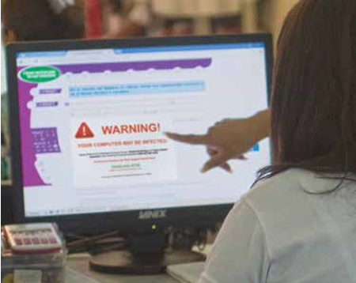

Unidad3
Algunas formas de presentar la información en internet.
- Adquirir habilidades para identificar distintos tipos de archivos, según su formato, así como para bajar antivirus.
- Aprender a buscar y a guardar imágenes desde internet.
En esta unidad podrás ver que internet no sólo sirve para comunicarte y buscar información, sino también ¡para divertirte! puedes buscar y guardar videos y hasta música para tu colección personal o para compartir con tus amigos.
Reto 11 - Reconocer qué tipos de archivos hay en internet
Identificar archivos
En internet puedes encontrar imágenes, fotos, texto o archivos de alguna aplicación con distintos formatos. Los formatos son las distintas maneras de guardar un archivo según la información que contienen. Es importante que sepas qué tipos de
formato puede tener un archivo para que aprendas a identificarlos:
| html: son los archivos de todas las páginas web. | |
 |
zip: son archivos comprimidos, integrados en un paquete. Para abrirlos necesitas un programa descompresor de archivos. El más conocido y manejable es WinZip, que puedes bajar de la red de manera gratuita. Pide ayuda al apoyo técnico de la Plaza comunitaria para poder hacer esto. |
 |
pdf: es un formato de archivo universal que mantiene el tipo de letra, imágenes, gráficos y apariencia de cualquier documento de origen, independientemente de la aplicación y plataforma utilizada para crearlo. Estos archivos se pueden leer pero no modificar (por ejemplo, no se puede cambiar mayormente el tipo de letra). |
 |
jpg/gif: es un formato de imágenes para internet, son de tamaño más pequeño que otros tipos de imágenes para que se puedan cargar y visualizar rápidamente. |
 |
mp3: son archivos de música que puedes bajar para uso personal. |
| exe: son archivos ejecutables en windows, aplicaciones de programas que se ejecutan de manera directa, es decir, sin instalarse en la computadora. |
Guardar Archivos
Puedes guardar la información de las páginas de internet (no sólo la dirección), una
vez que tienes en tu pantalla la página que quieres guardar:
- Selecciona del menú principal la opción Guardar como
- Guarda la página con el nombre que quieras en la carpeta que elijas.

muchas de las actividades que antes se hacían de manera presencial ahora se pueden hacer a través de internet, lo que permite economizar tiempo y dinero? Algunas de estas actividades son, por ejemplo, el uso del correo electrónico, las transacciones bancarias, el pago de impuestos, la educación a distancia, la diversión, etcétera.
Reto 12 - Identificar otras formas de obtener información
Para poder visualizar un archivo con formato pdf , necesitas el programa Acrobat Reader, si no lo tienes instalado, puedes descargarlo realizando los siguientes pasos. Antes, pregunta al apoyo técnico si puedes hacerlo.
- Ingresa a la página: http://www.adobe.com/es/products/acrobat/readstep2.html
- Sigue las instrucciones que se te indican para bajar el programa Adobe Acrobat Reader Adobe Acrobat Reader en español.
- Instálalo en tu computadora, esto puede tardar unos minutos.
- Selecciona del menú Archivo la opción Guardar como.
- Indica, en la ventana que se abre, dónde quieres guardarlo y con qué nombre.
bajar este programa te puede llevar varios minutos, dependiendo de la velocidad de tu conexión a internet
Reto 13 - Buscar imágenes en internet
Buscar imágenes
En la unidad anterior aprendiste a usar un buscador. Ahora veremos otra de las ventajas que ofrecen.
Con los buscadores puedes encontrar imágenes y bajarlas a tu computadora. Google, Yahoo y otros te ofrecen esta posibilidad
Ingresa al sitio:
http://ww.google.com.mx y:
- Escribe en la Barra de búsquedael nombre de la imagen que necesites (suponiendo que estás buscando imágenes sobre las construcciones mayas, podrás escribir: construcciones mayas).
- Oprime el botón del ratón en Imágenes.
- En la siguiente pantalla, haz clic en Buscar imágenes.
- Observa en la pantalla los resultados de la búsqueda de imágenes.
Guardar imágenes
Para guardar una imagen en tu computadora:
- Oprime el botón derecho del ratón sobre la imagen.
- Selecciona en el menú Archivo la opción Guardar como. Si la computadora en la que estás trabajando es una MAC, oprime la tecla Ctrl + un clic del ratón y te aparecerá un menú, selecciona la opción Guardar imagen como, o simplemente arrastra la imagen al lugar donde quieres guardarla en tu computadora.
- Indica en la ventana que se abre en qué carpeta o unidad de la computadora quieres guardar tu imagen y el nombre.
- Haz clic en Guardar para finalizar.
Reto 14 - Proteger la información personal y el equipo de cómputo
Virus informáticos
| Al igual que los seres humanos, las computadoras pueden ser infectadas o atacadas por virus, que pueden dañar parte de su funcionamiento o causar un daño tan importante que no haya ningún remedio y se tenga que borrar todo lo almacenado en la computadora. A los virus que atacan a las computadoras se les llama virus informáticos; son programas que pueden instalarse automáticamente y de manera oculta en tu computadora cuando estás navegando por internet, al abrir un correo o al introducir una memoria usb. Estos programas se ejecutan sin permiso del usuario y tienen como objetivo dañar los archivos de la computadora y algunas de sus funciones, e incluso afectar el equipo de cómputo, como puede ser el disco duro. |  |
¿Cómo protegerse de los virus?
Es importante que protejas tu equipo con un antivirus, cuya función es "vacunar" el archivo para eliminar
el virus; pero a veces los virus son tan poderosos que se necesita un antivirus más potente.
Por lo general, las compañías que ofrecen el servicio de internet te obsequian un antivirus, o también puedes buscar en internet
algún portal con este servicio, sólo que por ser gratis a veces su protección es limitada (un mes) y no garantiza eliminar todos los virus.
Si quieres estar más actualizado sobre ese tema, busca en internet cuáles son los virus actuales, cómo protegerse de ellos y cómo identificarlos
Además de los virus, hay otras amenazas en internet de las cuales debes protegerte, y que no son tan sencillas de identificar. Son los fraudes,
estafas o extorsiones cibernéticas, y muchas veces se dan por descuidos del propio usuario. ¿Cómo funcionan?
Muchas veces, navegando en internet, es muy fácil que participes en foros o redes sociales y dejes datos personales, desde tu nombre o
correo electrónico hasta fotografías o información más precisa, como domicilio, nombres de familiares, actividades que realizas, etcétera.
Si bien es parte de la interacción que se da en dichos espacios, lo cierto es que hay usuarios que recolectan esta información y la pueden usar
para situaciones que van desde envío de publicidad no solicitada hasta actividades ilegales, como solicitarte dinero.
Es muy importante usar tu criterio para saber en qué sitios y a qué personas les compartes tu información.
Si tienes dudas sobre algún correo electrónico que recibas, o sobre personas que desconoces y que te piden ser su "amigo",
o te solicitan datos personales, consulta con las figuras educativas de la Plaza comunitaria, o con familiares más experimentados.
Ellos podrán ayudarte y evitar que caigas en una situación que ponga en riesgo la seguridad de tu información o, incluso, tu propia integridad.